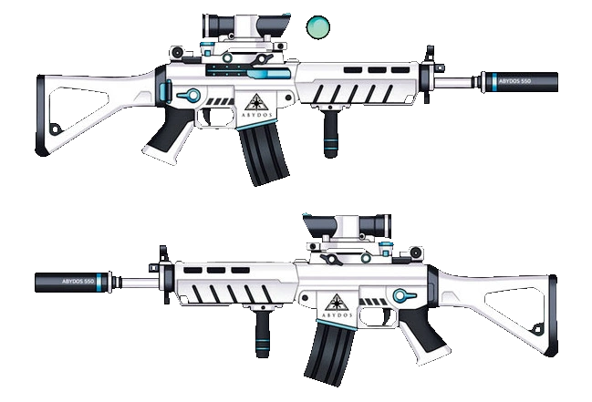
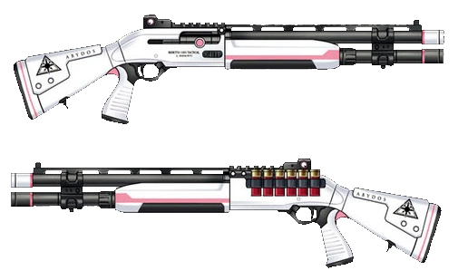
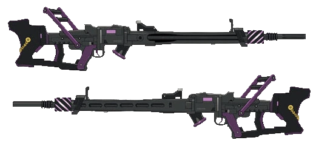
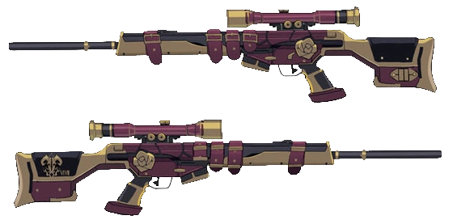

| Sunaookami Shiroko | |
| Year | 2nd Year |
|---|---|
| Birth | May 16th |
| Height | 156 cm |
| Weapon |  White Fang 465 |
| Bio | The sports-loving field captain of the Countermeasures Committee of the Abydos High School. Shiroko is a girl of few words and shows little emotions alike. She may seem aloof with her appearance, but deeply cares about Abydos High School the most. Due to troubling circumstances happening in Abydos High School, she is willing to do anything to revitalize the school by any means. Often times though her ideas are sometimes ridiculous like proposing to rob a bank for school funds. |
| Takanashi Hoshino | |
| Year | 3rd Year |
|---|---|
| Birth | January 2nd |
| Height | 145 cm |
| Weapon |  Eye of Horus |
| Bio | Takanashi Hoshino is the president of the Abydos Student Council and the only third-year of Abydos High School, and the current chairwoman for the Countermeasures Commitee. Speaking like a senile aunt, she enjoys playing around and napping more than work. Because of this, she usually gets scolded by the rest of the Committee. But, once the mission starts, she protects her comrades by fighting valiantly on the front lines. Since accepting the title of student council president, she has gradually brightened up. Perhaps this is the real Hoshino. |
| Sorasaki Hina | |
| Year | 3rd Year |
|---|---|
| Birth | May 16th |
| Height | 142 cm |
| Weapon |  The End: Destroyer |
| Bio | She is a 3rd year student and the current chairwoman of Gehenna's Prefect Team, who is rightfully feared by every student in the academy, if not all of Kivotos. Basically, she is a troublesome, laid-back person, calls it a "hassle" when she talks about school rules. However, said person becomes strict at the academy, and enacts calm and quick judgment without hesitation on the battlefield. Her fighting prowess is astounding and for that reason, any organization that opposes Gehenna is more afraid of her than anyone else from the Prefect Team. |
| Rikuhachima Aru | |
| Year | 2nd Year |
|---|---|
| Birth | March 12th |
| Height | 160 cm |
| Weapon |  Wine Red Admire |
| Bio | The self-proclaimed “Boss” (i.e. president) of Club Problem Solver 68, Aru is a 2nd year student at Gehenna Academy. She conducts her illegal business however she pleases. While Aru always puts on a cool, beauteous, and villainous facade, she has a habit of breaking character often and exposing her true personality when teased or pressured. Despite the vain and conceited persona she wears, Aru is meticulous and caring for the people she is close to. There is definitely more to her than she lets on. Will you be the one to find out what secrets she may hold close? |